De esta ventana se despliegan los siguientes sub_menus:
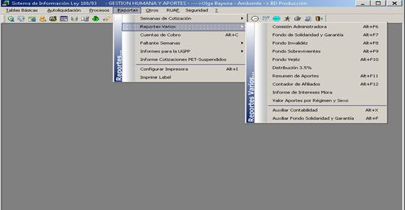
Genera los aportes de la Comisión de la Administración, normalmente se genera por todas las empresas, el primer día hábil del mes siguiente al que se va a generar.
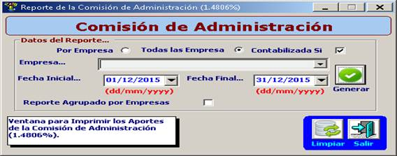
Al dar clic en generar, trar el informe solicitado como se muestra en la siguiente ilustración.
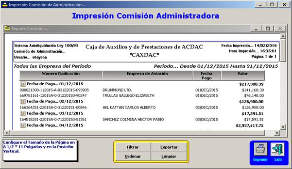
Para contabilizar esta comisión se deben seguir los pasos del tema Contabilización Comisión, de este manual.
Los reportes utilizados para hacer entrega de los aportes al Fondo de Solidaridad y Susbsistencia son los siguientes:
Al dar clic en FOSYGA Plano Año 2010, aparece la siguiente ventana:
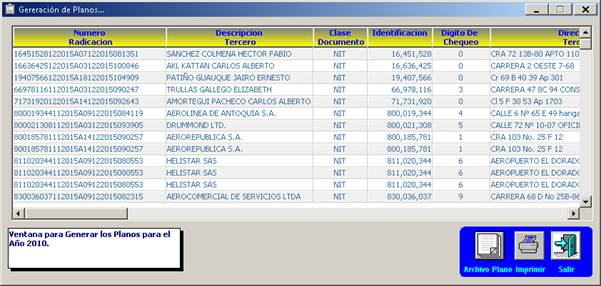
Esta ventana contiene la información con la que se genera el archivo plano.
Adicionalmente
Esta ventana sirve para generar e imprimir los aportes al Fondo de Invalidez, los cuales son distribuidos al momento de aplicar los pagos de aportes de ley 100.
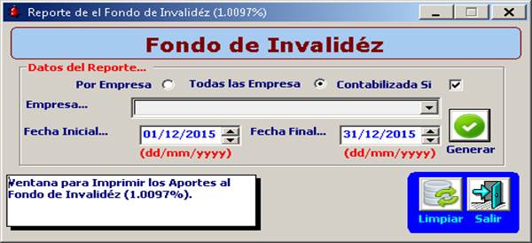
Al dar clic en generar muestra los valores que fueron aplicados en cada régimen para dicho fondo, como se muestra en la siguiente ilustración.
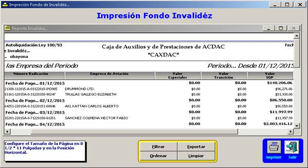
Esta ventana sirve para generar e imprimir los aportes al Fondo de Sobrevivientes, los cuales son distribuidos al momento de aplicar los pagos de aportes de ley 100.
Al dar clic en generar muestra los valores que fueron aplicados en cada régimen para dicho fondo.
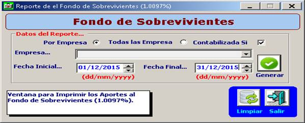
Fondo de Vejez
Esta ventana sirve para generar e imprimir los aportes al Fondo de Vejez, los cuales son distribuidos al momento de aplicar los pagos de aportes de ley 100.
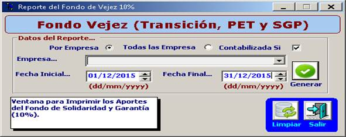
Al dar clic en generar muestra los valores que fueron aplicados en este fondo, como se muestra en la siguiente ilustración:
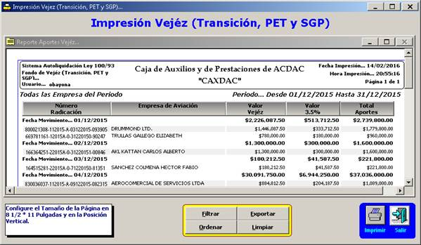
Esta ventana sirve para generar e imprimir la distribución del 3% entre los fondos de Invalidez, Sobrevivientes y Comisión de la Administración, los cuales son repartidos al momento de aplicar los pagos de aportes de ley 100.
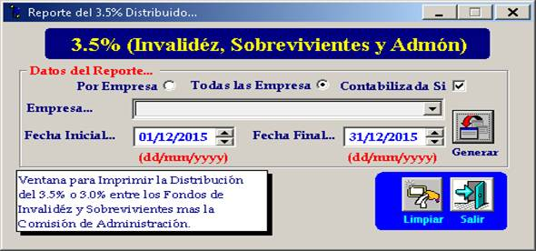
Al dar clic en generar muestra los valores que fueron distribuidos a estos fondos, como se muestra en la siguiente ilustración.
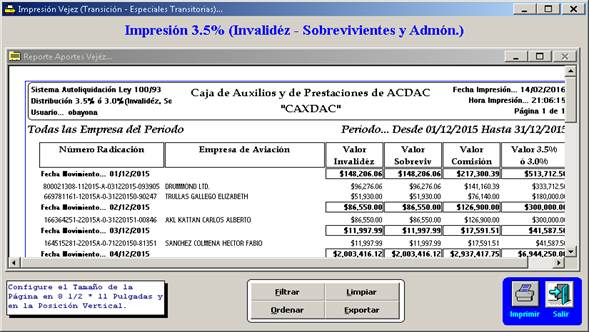
Esta ventana sirve para generar e imprimir el resumen de los aportes del sistema de autoliquidaciones de ley 100 durante un periodo determinado.
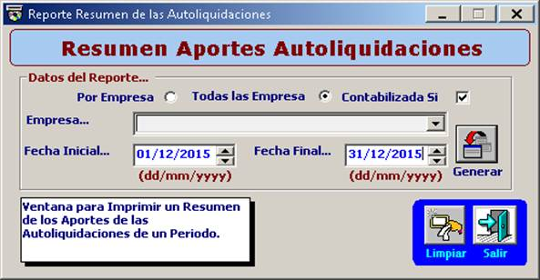
Al dar clic en generar muestra el resumen de los aportes, como se muestra en la siguiente ilustración:
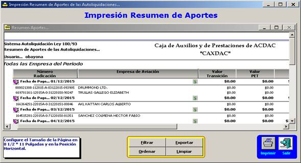
Reporta la cantidad de afiliados que realizaron aportes de Ley 100 durante un periodo determinado.
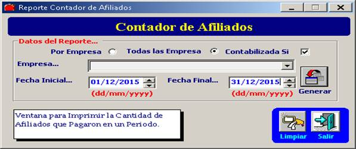
Al dar clic en generar, muestra un informe detallado por Afiliado y por Regimen, esta información se utiliza para validar los datos correspondiente a los Estadísticos de Afiliados formatos 203 y 205 que son transmitidos a la Superintendencia Financiera de Colombia mensualmente.
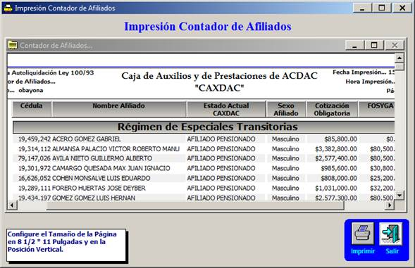
Registra los intereses de mora que se han cobrado y aplicado en las Autoliquidaciones de Aportes de Ley 100, correspondientes a pagos extemporáneos de los aportes.
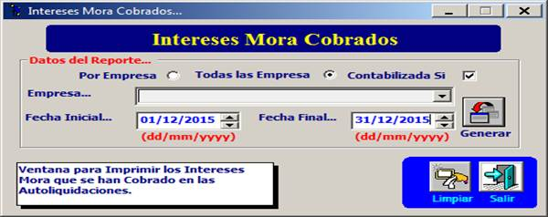
Al dar clic en generar, muestra la información detallada de los valores que se aplicaron a los fondos de Vejez, Invalidez, Sobreviviente; comisión de la Administradora, Solidaridad y Subsistencia tanto capital como los intereses, como se muestra en la siguiente ilustración.
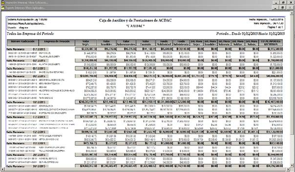
Registra los aportes por régimen y sexo de las Autoliquidaciones de Aportes de Ley 100, esta información se utiliza para validar los datos correspondiente a los Estadísticos de Afiliados (formatos 203 y 205) que son transmitidos a la Superintendencia Financiera de Colombia mensualmente.
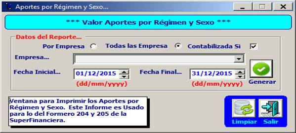
Al dar clic en generar, muestra la información detallada de los valores que se aplicaron a los fondos de Vejez, Invalidez, Sobreviviente; comisión de la Administradora, Solidaridad y Subsistencia discriminado por Régimen y Sexo, como se muestra en la siguiente ilustración.
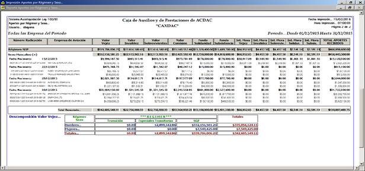
Esta ventana sirve para imprimir el auxiliar Contable de Baseware.
Sin embargo esta ventana no se encuentra en uso.
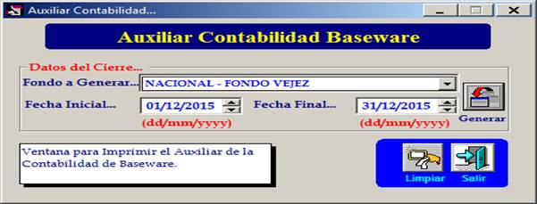
Esta ventana sirve para generar el auxiliar Contable de Fondo de Solidaridad y Subsistencia.
Sin embargo esta ventana no se encuentra en uso.
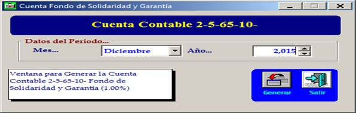
Ver También